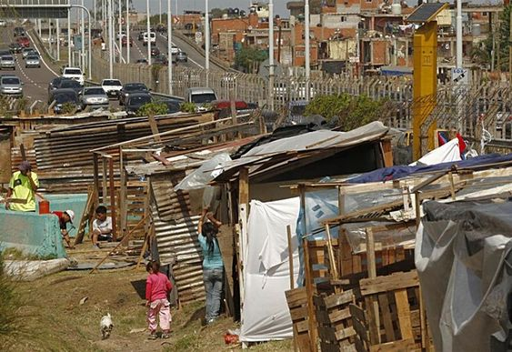

Para febrero de este año la pobreza había caído al 20,61 % de la población, continuando con un descenso interanual casi sin pausa desde febrero del 2023, cuando alcanzó el 23,02 %, lo que significa una reducción de 2,4 puntos porcentuales (p. p.).
Si se considera el lugar donde se sitúa la precariedad en el país diferenciándola por tipo de zona, se observa que en el segundo semestre del 2023 la disminución en las zonas rurales es menos evidente que en las urbanas. Es decir, las zonas con más densidad de población tienen menos familias que no logran cubrir sus necesidades básicas, en comparación con las más despobladas, que generalmente se encuentran en la periferia del territorio nacional. En el caso de la pobreza en zonas urbanas, la reducción de la pobreza fue de -2,5 p. p. entre los meses de febrero del 2023 y 2024 (18,5 % es el dato más actual), mientras que la misma bajó -2,3 p. p. en espacios rurales en ese mismo lapso, llegando al 26,1 %. Con respecto a la pobreza extrema urbana, esta llegó en febrero a 4,9 % (-1,2 p. p. interanual) y a 8,6 % en las zonas rurales (-1,1 p. p. interanual).
